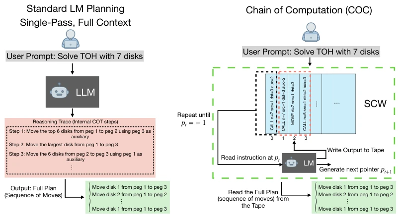
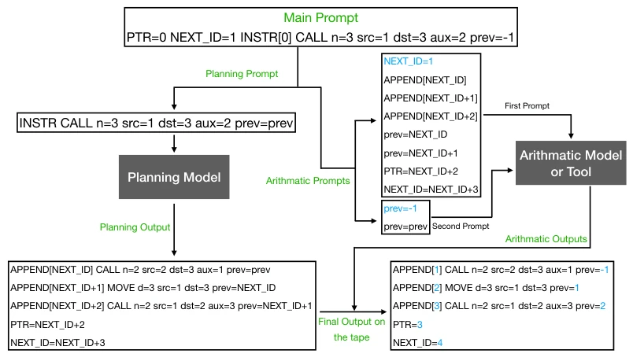
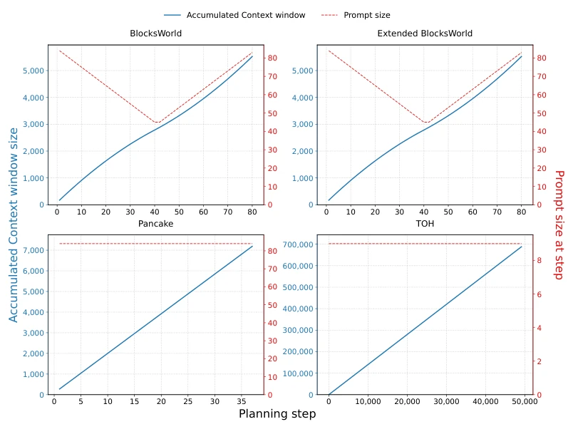

LLM 在对话代码上很强，但规划任务（Valmeekam et al., 2023; Shojaee et al., 2025）表现糟糕，复杂问题直接归零。理论上 Transformer 是图灵完备的（Lewandowski et al., 2026; Giannou et al., 2023），但实际训练学不会算法。现有方法要么依赖外部 Oracle，要么上下文窗口无限增长导致检索失效（Lehnert et al., 2024）。核心矛盾是理论能力与实证性能的鸿沟，需要一种架构让模型在有限上下文中迭代执行算法，而非单次生成。这揭示了当前 LLM 规划能力的瓶颈在于架构限制而非模型大小，且模型常依赖捷径学习而非理解任务结构。
—

Figure 1: Comparison between standard LM planning and Chain of Computation (COC). Instead of generating an entire plan in a single pass from the full context, COC employs a smaller LM that iteratively processes one instruction from a structured context window (SCW), updates the SCW, and generates the next pointer, pt+1. The process terminates when pt = −1, after which the complete action sequence is extracted. The example shown corresponds to the Tower of Hanoi (TOH) domain.
Figure 3: Mean success rate on TOH across ran- dom hold-out percentages of the training data, with error bars showing ± one standard devia- tion over five random seeds.

Figure 6: One iteration of the planning loop when planning and arithmetic operations are separated. The planning language model generates symbolic instructions, while the arithmetic operations are performed by a dedicated arithmetic module before the updated prompt is written back to the tape.

Figure 7: Prompt size and cumulative context-window size over planning steps for BlocksWorld, Extended BlocksWorld, Pancake, and Tower of Hanoi (TOH). The x-axis shows the planning step. The context-window curve measures the initial prompt plus all model-generated text up to that step, while the prompt-size curve measures the prompt at the current step.